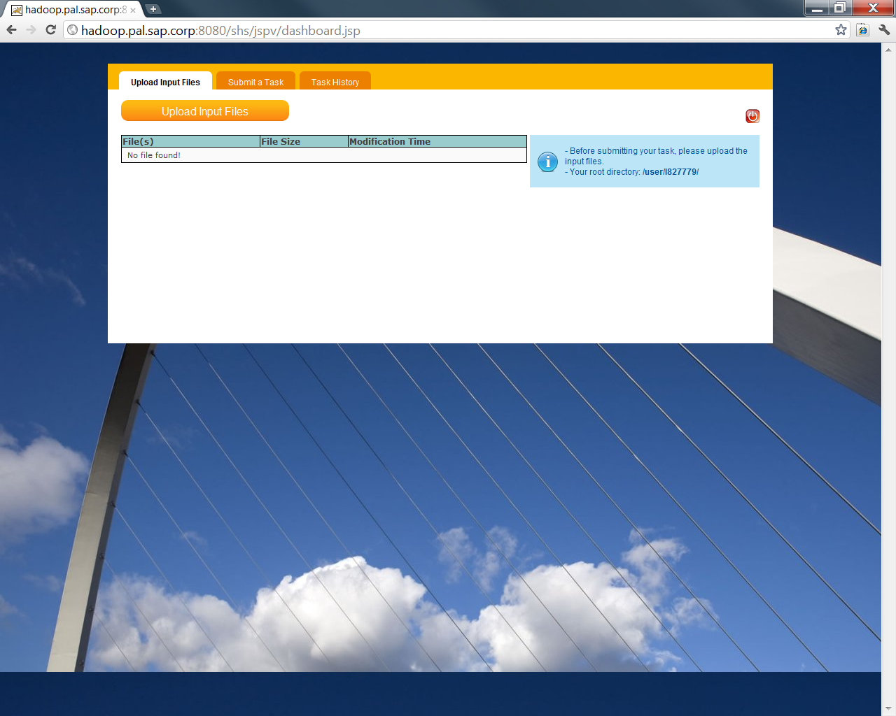
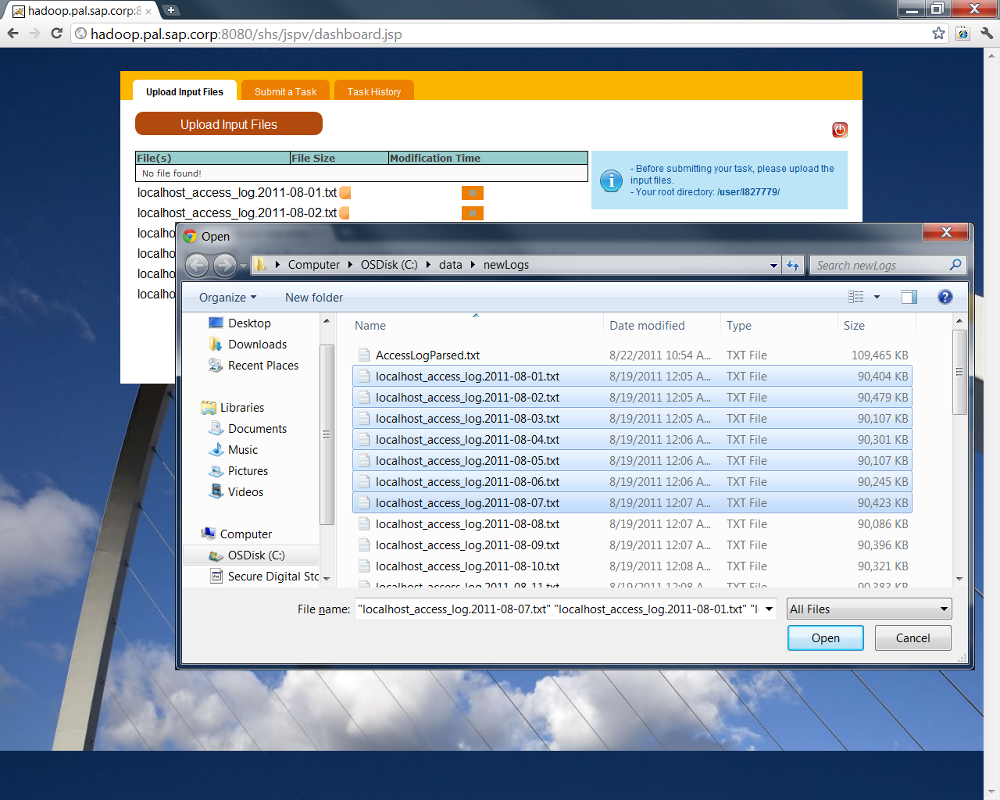
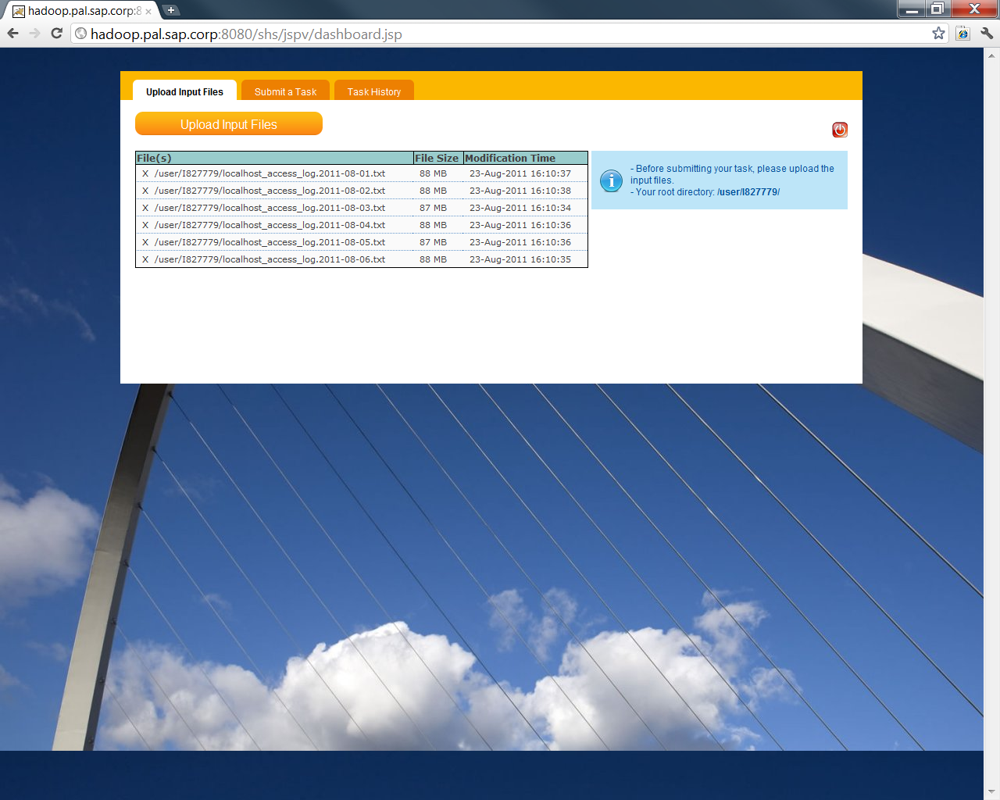
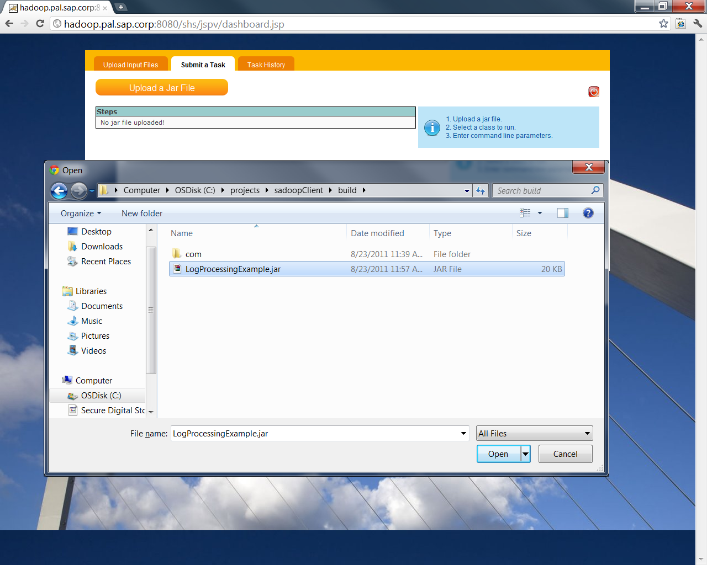
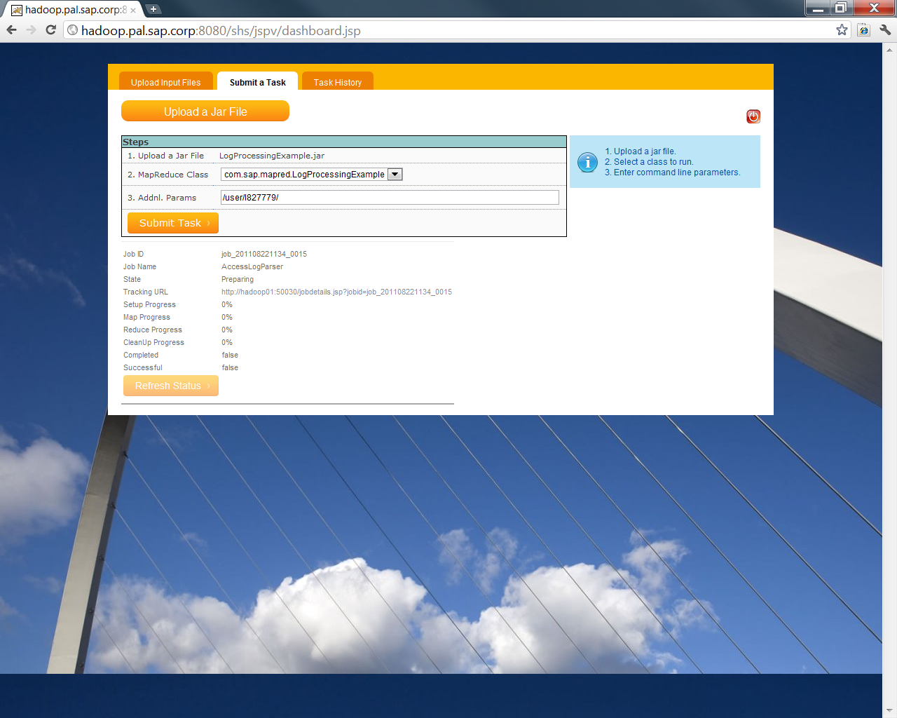

If you have arrived this page, that means you have certain understanding about Hadoop. Now let's focus on a relatively common usage -- Log Processing.
The log files used in this example are in the format used by Apache Web Server and Apache Tomcat Application Server.
If you wish to parse different log files in different format, please change the MapReduce source code accordingly.
10.48.171.223 hadoop01
10.48.171.224 hadoop02
10.48.171.225 hadoop03
10.48.171.226 hadoop04
10.48.171.227 hadoop05
10.48.171.228 hadoop06
10.48.171.229 hadoop07
10.48.171.230 hadoop08
10.48.171.231 hadoop09
10.48.171.216 hadoop10
1. Upload the sample log files to your HDFS personal folder via Task Force Web Application.



In case you need some guidelines about how to use Task Force Web Application, please refer to code lab 2.
2. Go to the "Submit a Task" tab in Task Force and upload the LogProcessingExample.jar.

3. Select "com.sap.mapred.LogProcessingExample" in the "MapReduce Class" drop down list and enter the HDFS directory containing the log files.

4.
// Setup an upload job - 1
UploadStep upload1 = new UploadStep("file1");
upload1.setLocalFilename("C:\\data\\file1.xyz");
upload1.setRemoteFilename(context.getRemoteFolder() + "file1.xyz");
// Setup an upload job - 2
UploadStep upload2 = new UploadStep("file2");
upload2.setLocalFilename("C:\\data\\file2.xyz");
upload2.setRemoteFilename(context.getRemoteFolder() + "file2.xyz");
// Setup an upload job - 3
UploadStep upload3 = new UploadStep("file3");
upload3.setLocalFilename("C:\\data\\file3.xyz");
upload3.setRemoteFilename(context.getRemoteFolder() + "file3.xyz");
// Add the steps and run them
context.addStep(upload1);
context.addStep(upload2);
context.addStep(upload3);
context.runSteps();
UploadFolderStep uploadFolder = new UploadFolderStep("UploadFolder: temp");
uploadFolder.setLocalFolderName("C:\\temp\\");
uploadFolder.setRemoteFolderName(context.getRemoteFolder() + "temp/");
context.addStep(uploadFolder);
context.runSteps();
// Download a file
DownloadFileStep downloadFile = new DownloadFileStep("Download File");
// Specify the remote and local file names
downloadFile.setRemoteFilename(cm.getRemoteFolder() + "test.txt");
downloadFile.setLocalFilename("c:\\data\\test.txt");
context.addStep(downloadFile);
context.runSteps();
// Download a temp folder
DownloadFolderStep downloadFolder = new DownloadFolderStep("DownloadFolder: temp");
// Specify the remote and local folder names
downloadFolder.setRemoteFolderName(cm.getRemoteFolder() + "temp/");
downloadFolder.setLocalFolderName("c:\\temp");
context.addStep(downloadFolder);
context.runSteps();
Hive is a sub-project developed by Facebook to provide an SQL interface over HDFS and uses MapReduce to perform SQL
operations. Hive is designed to perform data warehouse operations on extremely huge data volumes over HDFS.
Prototype SAP ETL API was created based on Hive to support SQL and provide JDBC interface:
1. The following will create a table and load data into the table. We are introducing the notion of dependency (see the hightlighted line for adding step dependency):
There are 3 steps in this example, uploading the tsv file (like the first example), creating a table and loading data.
The dependency required here is for data loading step <2> wait for table creation step <1>
import com.sap.hadoop.conf.ConfigurationManager;
import com.sap.hadoop.etl.ContextFactory;
import com.sap.hadoop.etl.ETLStepContextException;
import com.sap.hadoop.etl.IContext;
import com.sap.hadoop.etl.SQLStep;
public static void main(String[] args) throws ETLStepContextException, InterruptedException, IOException {
ConfigurationManager cm = new ConfigurationManager("I123456", "hadoopsap");
IContext context = ContextFactory.createContext(cm);
///////////////////////////////////////////////////////////////////////
// <0> Upload the input file "real_category.tsv"
///////////////////////////////////////////////////////////////////////
UploadStep uploadStep = new UploadStep("RealCategoryUpload");
uploadStep.setLocalFilename("C:\\data\\real_category.tsv");
uploadStep.setRemoteFilename(context.getRemoteWorkingFolder() + "real_category.tsv");
///////////////////////////////////////////////////////////////////////
// <1> Now create "category" table
///////////////////////////////////////////////////////////////////////
SQLStep createTableCategory = new SQLStep("CREATE TABLE category");
createTableCategory.setSql(" CREATE EXTERNAL TABLE IF NOT EXISTS category " +
" ( article_wpid INT, category_name STRING ) " +
" ROW FORMAT DELIMITED " +
" FIELDS TERMINATED BY '\t' " +
" LINES TERMINATED BY '\n'" +
" STORED AS TEXTFILE ");
///////////////////////////////////////////////////////////////////////
// <2> Load the TSV to "category" table
///////////////////////////////////////////////////////////////////////
SQLStep loadTableCategory = new SQLStep("LOAD TABLE category");
loadTableCategory.setSql(" LOAD DATA INPATH '" + context.getRemoteWorkingFolder() + "real_category.tsv' " +
" OVERWRITE INTO TABLE category");
context.addStep(uploadStep); // Add <0>
context.addStep(createTableCategory); // Add <1>
context.addStep(loadTableCategory, createTableCategory); // Add <2> and make it depend on <1>
context.runSteps();
}
import com.sap.hadoop.conf.ConfigurationManager;
import java.sql.Connection;
import java.sql.ResultSet;
import java.sql.SQLException;
import java.sql.Statement;
public static void main(String[] arg) throws SQLException {
ConfigurationManager cm = new ConfigurationManager("I123456", "hadoopsap");
// Get a JDBC connection to the Hive instance
Connection conn = cm.getConnection();
Statement stmt = conn.createStatement();
// Get the ResultSet
ResultSet rs = stmt.executeQuery(" SELECT * FROM category ");
int resultCount = 1;
while (rs.next()) {
System.out.println(resultCount + ", " + rs.getString(1) + ", " + rs.getString(2));
resultCount++;
}
stmt.close();
conn.close();
}
Next code lab will introduce how to submit an organic MapReduce to SAP Hadoop cluster using SAP Task Force web application.